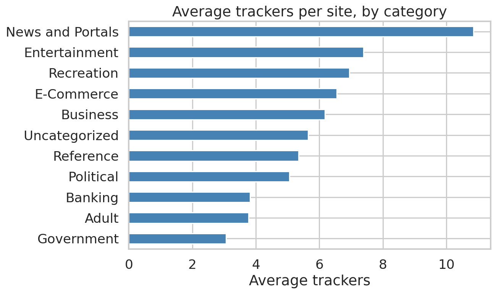
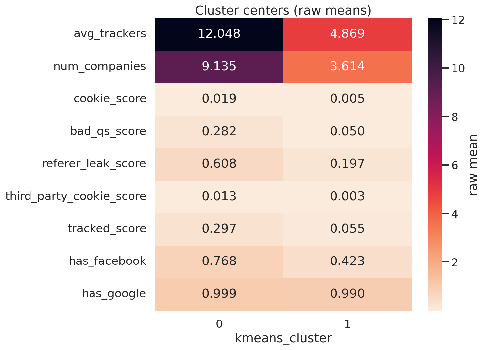
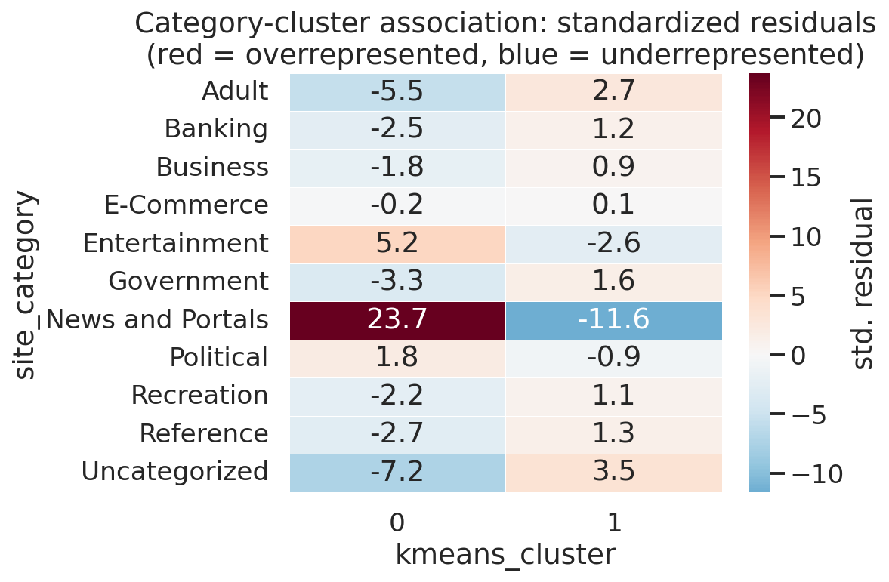

How do online tracking practices enable AI-driven profiling, and what ethical concerns emerge from algorithmic inference? The empirical half measures tracking across 10,000 sites. The conceptual half uses that exercise to demonstrate something about inference itself — that the categories a model outputs are made, not found.
Built a site-level dataset of 10,000 rows from the WhoTracks.me March 2025 release. Features cover tracker volume, company diversity, cookie activity, query-string tracking, referer leakage, third-party cookies and overall tracking prevalence, plus Facebook presence and one-hot site categories.
One deliberate exclusion is worth noting: Google presence was dropped from the clustering despite being retained descriptively, because at 99.2% prevalence it has almost no discriminative power. A feature that is true of nearly everything cannot separate anything.
Across the 10,000 sites the mean tracker count was 6.25 (median 5.2). Google-affiliated trackers appeared on 99.2% of sites and Facebook/Meta on 48.9% — concentration consistent with Englehardt and Narayanan (2016).
Tracking varies sharply by sector: News and Portals average 10.85 trackers per site, against 3.82 for Banking and 3.06 for Government.

K-Means at K=2 (silhouette 0.467) split sites into High and Lower Tracking Intensity regimes. The high-intensity group carries more than twice the trackers (12.05 vs. 4.87) and companies (9.14 vs. 3.61), with triple the referer leakage.

The category–cluster association is significant at p < .001, with News and Portals strongly overrepresented in the high-intensity regime (standardized residual +23.7) while Government, Banking and Adult sites are underrepresented. DBSCAN separately identified 634 outliers, the most extreme carrying 26–35 trackers.

A silhouette of 0.467 indicates meaningful but overlapping structure — a continuum, not two natural kinds of website. The two regimes are an artefact of choosing K=2, of which features were selected, and of how they were scaled. Change those decisions and the categories change.
That is precisely the ethical problem. The labels did not exist in the source data; the algorithm produced them. Applied to behavioral data about people rather than sites, the identical procedure generates inferred interests, risk scores and predictive profiles — categories that a person never disclosed, could not anticipate at the moment of consent, and cannot easily contest. The privacy harm sits in the inference step, not only in collection.
Working on this changed how I treat cluster labels in my other projects. Naming a group is an analytical act with consequences, not a neutral description of something that was already there.
This is a single monthly snapshot and it classifies websites, not users. WhoTracks.me measurements come from consenting Ghostery and Cliqz users, who likely differ from the general population in privacy awareness, geography and browser choice; the direction of that sampling bias cannot be determined from the data. Several tracking indicators are also strongly correlated, reducing the number of genuinely independent signals driving the clusters.